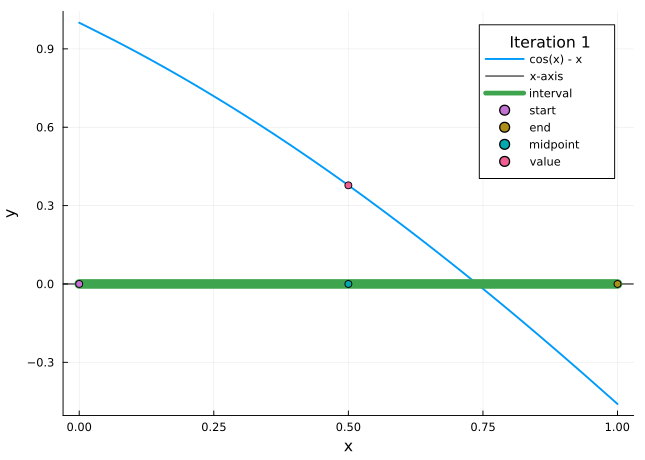
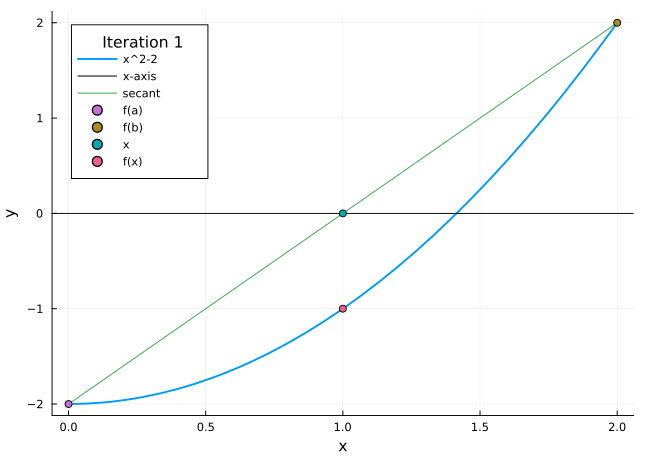
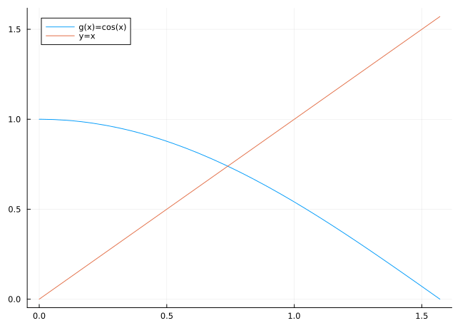
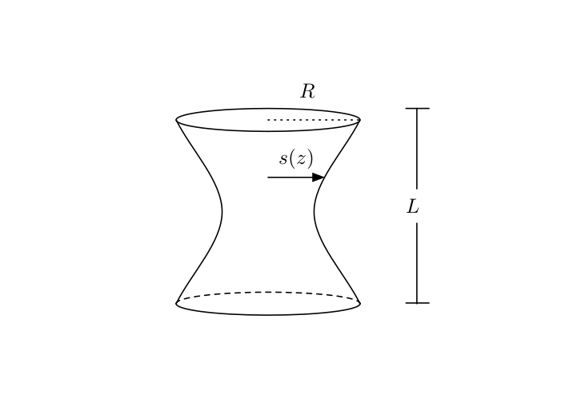

Having navigated the intricacies of rounding errors and understanding the nuances they introduce, it is time to delve into one of the cornerstones of Numerical Analysis: solving nonlinear equations, also known as the root-finding problem. The challenge of finding the roots of equations that do not lend themselves to simple algebraic solutions has been a persistent one throughout the history of mathematics. Yet, it is exactly these challenges that have spurred the development of a rich array of techniques, many of which are iterative in nature.
Why start with nonlinear equations? The reasons are manifold:
Pervasiveness of Nonlinear Problems: In the real world, many problems—ranging from physics to engineering to economics—are inherently nonlinear. Understanding how to tackle these equations is foundational for addressing a multitude of real-world scenarios.
Introduction to Iterative Algorithms: Solving nonlinear equations provides a natural and practical context to introduce iterative methods. These methods, which involve refining solutions progressively to approach the true answer, are central to many areas within Numerical Analysis.
Variety of Techniques: This chapter introduces a spectrum of methods, from the simple yet effective bisection method to the powerful Newton’s method. By studying a range of techniques, students will gain both a broad overview and a deep understanding of the strategies at their disposal.
Laying Groundwork for Convergence: As the first foray into iterative solutions, this chapter also paves the way for discussing the order of convergence, a crucial concept that measures the efficiency of iterative processes.
Throughout this chapter, we will dissect each method, understanding its mechanics, advantages, drawbacks, and areas of application. Through hands-on examples and explorations, you will gain not just theoretical knowledge, but practical skills that are immediately applicable.
3.1 Defining the problem
Let \(f:[a,b] \to \mathbb{R}\) be a continuous function, i.e. \(f\in C[a,b]\). The task is to find an \(p \in [a,b]\) such that \[
f(p)=0.
\tag{3.1}\] The number \(p\) is called a root of the equation or a zero of the function \(f\). In our example in the introduction, we had \(f(x)=\cos(x)-x\).
The first question to clarify is whether such a root exists. If we assume that \(f\) changes sign on \([a,b]\), that is, that \(f(a)f(b)<0\), then we know (by the Intermediate Value Theorem) that \(f\) must have a zero in \([a,b]\). However, in general there could be more than one zero in the interval. For our purposes, we will always assume that \(f\) has a unique zero \(p\in (a,b)\), and we will investigate our algorithms under that assumptions. In practice, one would first need to choose the interval \([a,b]\) suitably so that it contains a unique zero.
3.2 Bisection method
The bisection method is a very simple approach to the root finding problem, and one where the approximation error is very easy to control. The idea behind it is as follows: One divides the interval \([a,b]\) into halves, and decides in which subinterval the zero is located (by looking at the sign of \(f(x)\) in the midpoint of the interval). Then one repeats the method for this subinterval, and continues this until sufficient precision is reached.

Figure 3.1: Bisection method
More formally, the bisection method would be described as follows:
Set \(a_{1}=a\), \(b_{1}=b\), and \(x_{1}=(a_{1}+b_{1})/2\).
Compute \(f(x_{1})\).
If \(f(x_{1})=0\), then \(p=x_{1}\).
If \(f(x_{1})\neq 0\), then we choose \(a_{2}\) and \(b_{2}\) as follows:
if \(f(x_{1})\cdot f(a_{1}) > 0\) (i.e. \(f(x_{1})\) and \(f(a_{1})\) have the same sign), then we know \(p\in (x_{1}, b_{1})\), and we set \(a_{2}=x_{1}\) and \(b_{2}=b_{1}\);
if \(f(x_{1})\cdot f(a_{1}) < 0\) (i.e. \(f(x_{1})\) and \(f(a_{1})\) have opposite signs), then we know \(p\in (a_{1}, x_{1})\), and we set \(a_{2}=a_{1}\) and \(b_{2}=x_{1}\).
We repeat the procedure for the interval \([a_{2}, b_{2}]\) and so on until we compute \(p\) with a specified accuracy.
We now show that this method actually works as expected: namely, that the sequence \((x_n)\) converges to the root \(p\), and that we can control the error of \((x_n)\) approximating \(p\).
Theorem 3.1 Suppose that \(f\in C[a, b]\) has a unique zero \(p\) and that \(f(a)\cdot f(b) < 0\). Then the sequence \(\{x_n\}\) of the bisection method converges to \(p\), and \[
\left\vert x_{n} - p\right\vert\leq \frac{ b-a}{2^{n}} \quad \text{for all }n\ge1.
\tag{3.2}\]
Proof. For \(n\geq 1\), we have by construction \[
a_{n} \leq p \leq b_{n} .
\tag{3.3}\] Subtracting \(x_{n}\) from this inequality yields \[
a_n-x_{n} \leq p - x_n \leq b_n - x_{n}.
\tag{3.4}\] Recalling that \(x_{n}=(a_{n}+b_{n})/2\), we can rewrite this as \[
-\frac{b_{n}- a_{n}}{2} \leq p - x_{n} \leq \frac{b_{n}- a_{n}}{2},
\tag{3.5}\] or equivalently, since \(b_n-a_n=(b-a)/2^{n-1}\), \[
\left\vert p-x_{n}\right\vert
\leq \frac{1}{2}\left(b_{n} - a_{n}\right)
= \frac{ b-a}{2^{n}} .
\tag{3.6}\] This implies that \(x_{n} \to p\) as \(n \to \infty\) and also gives us the proposed error estimate. ◻
Example 3.1 Let us find an approximation to \(\sqrt{2}\) correct to within \(10^{-3}\). Consider the function \(f(x)=x^{2}-2\). One of its zeros is \(\sqrt{2}\). If we take \(a=1\) and \(b=2\), then \(f(a)=-1<0\) and \(f(b)=2>0\). In addition, we know that \(\sqrt{2}\) is the unique zero of \(f\) on the interval \([a, b]\). Now we can apply the bisection method and calculate an approximation to \(\sqrt{2}\).
First, we calculate the number of steps necessary to compute \(\sqrt{2}\) with accuracy \(10^{-3}\). This requires to find an integer \(N\) such that \[
\vert x_{N}-p\vert\leq \frac{b-a}{2^{N}}=2^{-N}< 10^{-3}.
\tag{3.7}\] Since \(2^{10}=1024\), this inequality is satisfied if we take \(N=10\). Table 3.1 shows the results of the bisection method.
Code
import pandas as pd# Define the functiondef f(x):return x**2-2# Initialize parametersN =10a =1.0b =2.0# Initialize a list to store the datadata = []# Bisection methodfor i inrange(1, N +1):# Find the middle point x = (a + b) /2# Add the values to the data list data.append({'n': i, 'a': a, 'b': b, 'x': x, 'f_x': f(x)})# Decide the side to repeat the stepsif f(x) * f(a) <0: b = xelse: a = xpd.DataFrame(data)
Table 3.1: Ten iterations of the bisection method for approximating \(\sqrt{2}\)
n
a
b
x
f_x
0
1
1.000000
2.000000
1.500000
0.250000
1
2
1.000000
1.500000
1.250000
-0.437500
2
3
1.250000
1.500000
1.375000
-0.109375
3
4
1.375000
1.500000
1.437500
0.066406
4
5
1.375000
1.437500
1.406250
-0.022461
5
6
1.406250
1.437500
1.421875
0.021729
6
7
1.406250
1.421875
1.414062
-0.000427
7
8
1.414062
1.421875
1.417969
0.010635
8
9
1.414062
1.417969
1.416016
0.005100
9
10
1.414062
1.416016
1.415039
0.002336
Thus, \(\sqrt{2}\approx 1.4150\) with absolute error smaller than \(10^{-3}\) (Note that \(\sqrt{2}=1.414213562373095\ldots\), so that the actual error is \(E=\vert x_{10}-\sqrt{2}\vert=0.0008255001269048545\ldots\)).
This example illustrates that the method converges, although rather slowly—we will come across much faster methods in due course. Also, it appears that the method is unnecessarily inefficient—note that \(x_7\) was a better approximation to \(\sqrt{2}\) than \(x_{10}\). On the other hand, the advantage is the simple and clear error estimate.
Finally, let us write the algorithm in a form that is more adapted to a computer implementation. We do not use a specific programming language here, but pseudocode. The bisection method is formulated in Algorithm 2.1. This matches our heuristic description above; note however that there are a number of efficiency improvements: We do not need to store the entire sequences \(\{a_n\}\), \(\{b_n\}\), \(\{x_n\}\), but only their “current” values, which we label \(a,b,x\). Also, by storing intermediate results, one tries to evaluate \(f\) as few times as possible, which means that the implementation is efficient even if evaluating \(f\) is time consuming.
Algorithm 2.1: Bisection method
\[
\begin{array}{ll}
\ 1: \ \textbf{function} \ Bisection(f,a,b,N) &\sharp \ function \ f, \ interval \ [a,b], \ number \ of \ steps \ N \\
\ 2: \ \quad F_a \gets f(a) & \\
\ 3: \ \quad \textbf{for} \ k \ from \ 1 \ to \ N \ \textbf{do} & \\
\ 4: \ \quad\quad x\gets (a+b)/2; \ \ F_x \gets f(x) &\sharp \ computes \ midpoint \ and \ function \ value \ there \\
\ 5: \ \quad\quad \textbf{if} \ F_x=0 \ \textbf{then} &\sharp \ zero \ has \ already \ been \ found \\
\ 6: \ \quad\quad\quad \textbf{break} & \\
\ 7: \ \quad\quad \textbf{else \ if} \ F_x\cdot F_a < 0 \ \textbf{then} &\sharp \ zero \ is \ in \ [a,x] \\
\ 8: \ \quad\quad\quad b\gets x & \\
\ 9: \ \quad\quad \textbf{else} &\sharp \ zero \ is \ in \ [x,b] \\
10: \ \quad\quad\quad a\gets x; \ \ F_a \gets F_x & \\
11: \ \quad\quad \textbf{end if} & \\
12: \ \quad \textbf{end for} & \\
13: \ \quad \textbf{return} \ x & \\
14: \ \textbf{end function} &
\end{array}
\]
The method of false position (or regula falsi method) is a slight variation of the bisection method. The idea is to choose a more efficient intermediate point \(x\) than just the midpoint of the interval \([a,b]\). Instead, one joins the points \((a, f(a))\) and \((b, f(b))\) with a straight line (the secant line) and find the point where this line intersects the \(x\) axis. Since the line is given by \[
y=f(a)+\frac{f(b)-f(a)}{b-a}(x-a),
\tag{3.8}\] this intersection point is located at \[
\quad x = a-\frac{f(a)}{f(b)-f(a)}(b-a) .
\tag{3.9}\]
The algorithm for the method of false position is just the same as Algorithm 2.1, except that in line 4, the statement \(x \gets (a+b)/2\) is replaced by \(x \gets a-\frac{f(a)}{f(b)-f(a)}(b-a)\). (Again, one may optimize this to avoid evaluating \(f\) too often.)
Example 3.2 Let us return to the problem of finding an approximation to \(\sqrt{2}\) correct to within \(10^{-3}\) by finding a zero of the function \(f(x)=x^{2}-2\). Again taking \(a=1\) and \(b=2\), we have \(f(a)=-1<0\) and \(f(b)=2>0\), and so \(\sqrt{2}\) is the unique zero of \(f\) on the interval \([a, b]\). Carrying out 10 steps of the method of false position, we obtain the results in Table 3.2. The desired accuracy is obtained after the fourth step. Moreover, comparing with Table 3.1, it appears that the method of False Position converges much faster than the Bisection method in this example.
Table 3.2: Numerical example for method of false position
\(k\)
\(x_n\)
\(f(x_n)\)
\(\lvert x_n-\sqrt{2}\rvert\)
1
1.333333333
-0.222222223
0.080880229
2
1.400000000
-0.040000000
0.014213562
3
1.411764706
-0.006920415
0.002448856
4
1.413793104
-0.001189059
0.000420458
5
1.414141414
-0.000204061
0.000072148
6
1.414201183
-0.000035014
0.000012379
7
1.414211438
-0.000006009
0.000002124
8
1.414213198
-0.000001031
3.64\(\times10^{-7}\)
9
1.414213500
\(-1.76\times10^{-7}\)
6.20\(\times10^{-8}\)
10
1.414213552
\(-2.90\times10^{-8}\)
1.00\(\times10^{-8}\)
The animation in Figure 3.3 shows the method of false position in action.

Figure 3.3: Method of false position
The method of false position converges faster than the bisection method in many cases. Unfortunately, it is not guaranteed that the method of false position will always converge faster—there are other examples where it actually turns out to be slower. A precise error estimate for the method of false position is hard to find, so we cannot predict how fast the method will converge.
We will now investigate a different problem that is closely related to root finding: the fixed point problem. Given a function \(g\) (of one real argument with real values), we look for a number \(p\) such that \[
g(p)=p.
\tag{3.10}\] This \(p\) is called a fixed point of \(g\).
Any root finding problem \(f(x)=0\) can be reformulated as a fixed point problem, and this can be done in many (in fact, infinitely many) ways. For example, given \(f\), we can define \(g(x):=f(x) + x\); then \[
f(x) = 0 \quad \Leftrightarrow\quad g(x)=x.
\tag{3.11}\] Just as well, we could set \(g(x):=\lambda f(x) + x\) with any \(\lambda\in{\mathbb R}\backslash\{0\}\), and there are many other possibilities.
The heuristic idea for approximating a fixed point of a function \(g\) is quite simple. We take an initial approximation \(x_{0}\) and calculate subsequent approximations using the formula \[
x_{n}:=g(x_{n-1}).
\tag{3.12}\] A graphical representation of this sequence is shown in Figure 3.4.

Figure 3.4: Fixed point iteration
Why is this sequence expected to approximate a fixed point? Suppose for a moment that the sequence \((x_n)\) converges to some number \(p\), and that \(g\) is continuous. Then \[
p=\lim_{n\to\infty}x_{n}=\lim_{n\to\infty}g(x_{n-1})=
g\left(\lim_{n\to\infty}x_{n-1}\right)=g(p).
\tag{3.13}\] Thus, if the sequence converges, then it converges to a fixed point. However, this resolves the problem only partially. One would like to know:
Under what conditions does the sequence \((x_n)\) converge?
How fast is the convergence, i.e., can one obtain an estimate for the approximation error?
The following theorem gives us the answers to those questions. We will revisit this theorem—in a more general case—later.
Theorem 3.2 (Fixed Point Theorem) Suppose that \(g:[a,b]\to [a,b]\) is differentiable, and that there exists \(0<k<1\) such that \[
\lvert g^{\prime}(x)\rvert\leq k\quad \text{for all }x \in (a,b).
\tag{3.14}\] Then, \(g\) has a unique fixed point \(p\in [a,b]\); and for any choice of \(x_0 \in [a,b]\), the sequence defined by \[
x_{n}:=g(x_{n-1}) \quad \text{for all }n\ge1
\tag{3.15}\] converges to \(p\). The following estimate holds: \[
\lvert p- x_{n}\rvert \leq k^n \lvert p-x_{0}\rvert \quad \text{for all }n\geq1.
\tag{3.16}\]
Proof. We first show that \(g\) has a fixed point \(p\) in \([a,b]\). If \(g(a)=a\) or \(g(b)=b\) then \(g\) has a fixed point at an endpoint. If not, then it must be true that \(g(a)>a\) and \(g(b)<b\). This means that the function \(h(x):=g(x)-x\) satisfies \[
\begin{aligned}
h(a) &= g(a)-a>0, & h(b)&=g(b)-b<0
\end{aligned}
\tag{3.17}\] and since \(h\) is continuous on \([a,b]\) the Intermediate Value Theorem guarantees the existence of \(p\in(a,b)\) for which \(h(p)=0\), equivalently \(g(p)=p\), so that \(p\) is a fixed point of \(g\).
To show that the fixed point is unique, suppose that \(q\neq p\) is a fixed point of \(g\) in \([a,b]\). The Mean Value Theorem implies the existence of a number \(\xi\in(\min\{p,q\},\max\{p,q\})\subseteq(a,b)\) such that \[
\frac{g(p)-g(q)}{p-q}=g'(\xi).
\tag{3.18}\] Then \[
\lvert p - q\rvert = \lvert g(p)-g(q) \rvert = \lvert (p-q)g'(\xi) \rvert = \lvert p-q\rvert \lvert g'(\xi) \rvert \le k\lvert p-q\rvert < \lvert p-q\rvert,
\tag{3.19}\] where the inequalities follow from Eq. 3.14. This is a contradiction, which must have come from the assumption \(p\neq q\). Thus \(p=q\) and the fixed point is unique.
Since \(g\) maps \([a,b]\) onto itself, the sequence \(\{x_n\}\) is well defined. For each \(n\ge0\) the Mean Value Theorem gives the existence of a \(\xi\in(\min\{x_n,p\},\max\{x_n,p\})\subseteq(a,b)\) such that \[
\frac{g(x_n)-g(p)}{x_n-p}=g'(\xi).
\tag{3.20}\] Thus for each \(n\ge1\) by Eq. 3.14, Eq. 3.15\[
\lvert x_n-p\rvert = \lvert g(x_{n-1})-g(p) \rvert = \lvert (x_{n-1}-p)g'(\xi) \rvert = \lvert x_{n-1}-p\rvert \lvert g'(\xi) \rvert \le k\lvert x_{n-1}-p\rvert.
\tag{3.21}\] Applying this inequality inductively, we obtain the error estimate Eq. 3.16. Moreover since \(k <1\) we have \[
\lim_{n\rightarrow\infty}\lvert x_{n}-p\rvert \le \lim_{n\rightarrow\infty} k^n \lvert x_{0}-p\rvert = 0,
\tag{3.22}\] which implies that \((x_n)\) converges to \(p\). ◻
The following example shows why the conditions of the Theorem 3.2 are important.
Example 3.3 The equation \[
f(x)=x^{2}-2=0
\tag{3.23}\] has a unique root \(\sqrt{2}\) in \([1, 2]\). There are many ways of writing this equation in the form \(x=g(x)\); we consider two of them: \[
\begin{aligned}
x&=g(x)=x-(x^{2}-2), &
x&=h(x)=x-\frac{x^{2}-2}{3}.
\end{aligned}
\tag{3.24}\] Which of these fixed point problems generate a rapidly converging sequence?
It is easy to see that the condition of the fixed point theorem is not satisfied by the function \(g\) on \([1,2]\): Namely, \(g(2)=0\), so that \(g(2)\not\in[1, 2]\). On the other hand \(h\) satisfies the conditions because \[
h(x)\in [1, 2] \quad \left(\max_{x\in[1, 2]}h(x)=\frac{17}{12},
\; \min_{x\in[1, 2]}h(x)=\frac{4}{3}\right) \quad \text{and} \quad \lvert h^{\prime}(x)\rvert\leq 1/3.
\tag{3.25}\] Thus, the fixed point theorem guarantees that the sequence \((x_n)\) produced by the fixed point iteration procedure \(x_{n}=h(x_{n-1})\) converges to \(p=\sqrt{2}\).
Table 3.3: Fixed point iteration converges quickly for \(h\)
\(n\)
\(x_{k}=g(x_{n-1})\)
\(\vert x_n-\sqrt{2}\vert\)
0
1.0
0.414213562
1
2.0
0.585786438
2
0.0
1.414213562
3
2.0
0.585786438
4
0.0
1.414213562
5
2.0
0.585786438
6
0.0
1.414213562
7
2.0
0.585786438
8
0.0
1.414213562
\(n\)
\(x_{k}=h(x_{n-1})\)
\(\vert x_n-\sqrt{2}\vert\)
0
1.0
0.414213562
1
1.333333333
0.080880229
2
1.407407407
0.006806155
3
1.413808871
0.000404691
4
1.414190363
0.000023199
5
1.414212235
0.000001327
6
1.414213486
7.6\(\times 10^{-8}\)
7
1.414213558
4.0\(\times 10^{-9}\)
8
1.414213562
0.0
Table 3.3 shows the sequences generated by fixed point iteration on \(g\) and \(h\) with start value \(x_0=1\). It is apparent that the sequence generated by \(h\) converges quite fast, whereas the one generated by \(g\) does not converge at all. The example is explored further in Practical 2.
The example illustrates that one needs to be careful in rewriting root finding problems as fixed point problems—there are many ways to do so, but not all lead to a good approximation. Note at this point that Theorem 3.2 gives only sufficient conditions for convergence; in practice, convergence might occur even if the conditions are violated.
For implementing the fixed point method as a computer algorithm, there’s one more complication to be taken into account: how many steps of the iteration should be taken, i.e., how large should \(n\) be chosen, in order to reach the desired precision? For the bisection method, the error estimate Eq. 3.2 allows an easy answer. The estimate in fixed point iteration, Eq. 3.16, turns out to be more difficult to use. While we can certainly estimate \[
\lvert x_{0}-p\rvert \leq \max\{ \lvert x_{0}-a\rvert, \lvert x_{0}-b\rvert\},
\tag{3.26}\] the constant \(k\) (which influences the speed of convergence significantly) is often difficult to obtain in practice, since it involves estimates on the derivative of \(g\).
Instead, one uses a different stopping condition for the algorithm. Since the sequence is expected to converge rapidly, one uses the difference \(|x_n-x_{n-1}|\) to measure the precision reached. If this difference is below a specified limit, say \(\tau\), the iteration is stopped. Since it is possible that the iteration does not converge—see the example above—one would also stop the iteration (with an error message) if a certain number of steps is exceeded, in order to avoid infinite loops. Algorithm 2.2 shows all this combined in pseudocode.
Newton’s method is one of the most effective numerical methods for solving a root-finding problem \(f(x)=0\). To derive this method, we need Taylor’s theorem in its simplest form, for a real-valued function of one real variable, with the remainder in Lagrange form.
Theorem 3.3 (Taylor’s Theorem in 1d) Suppose that \(f \in C^{k+1}(I)\) for some \(I\subset\mathbb{R}\). For each \(a \in I\) and \(x \in I\), there exists \(\xi\) between \(a\) and \(x\) such that \[
f(x) = f(a) + (x-a)f'(a)+ \dots +
\frac{(x-a)^{k}}{(k)!} f^{(k)}(a) + \frac{(x-a)^{k+1}}{(k+1)!} f^{(k+1)}(\xi).
\tag{3.27}\] Here \(f^{(k)}(a)\) denotes the \(k\)th derivative of \(f\) at \(x=a\).
The idea behind Newton’s method is as follows. We assume that \(f\in C^{2}[a,b]\). Let \(p\) be the root of \(f(x)=0\), and let \(x^{*}\) be an (initial) approximation to \(p\) such that \(\lvert x^{*}-p\rvert\) is small. The first-order Taylor expansion of \(f(x)\) about \(x^{*}\) is \[
f(x)=f(x^{*})+(x-x^{*})f^{\prime}(x^{*})+ \frac{(x-x^{*})^{2}}{2}
f^{\prime\prime}(\xi)
\tag{3.28}\] with some \(\xi\) between \(x\) and \(x^*\) (so that \(\xi\in[a,b]\)). Setting \(x=p\), we have \[
0=f(x^{*})+(p-x^{*})f^{\prime}(x^{*})+ \frac{(p-x^{*})^{2}}{2}
f^{\prime\prime}(\xi).
\tag{3.29}\] Since \(\vert x^{*}-p\vert\) is small, we ignore the last term in this formula and obtain \[
0\approx f(x^{*})+(p-x^{*})f^{\prime}(x^{*}) \ \ \ \Rightarrow \ \ \
p\approx x^{*}-\frac{f(x^{*})}{f^{\prime}(x^{*})} .
\tag{3.30}\] Of course, \(p\) computed using this formula will not be the exact root, but it is natural to expect it to be a better approximation than \(x^{*}\).
Let us formulate this as an iterative algorithm. Starting with an initial approximation \(x_{0}\), we define a sequence of approximation values \((x_n)\) by \[
x_{n+1}:=x_{n}-\frac{f(x_{n})}{f^{\prime}(x_{n})} .
\tag{3.31}\] Note that this is just a fixed point iteration with the function \[
g(x) := x - \frac{f(x)}{f'(x)}.
\tag{3.32}\] Geometrically, at the \(n\)th iteration, we consider the tangent to \(f(x)\) at \(x=x_{n-1}\), and finding its intersection with the \(x\) axis—see Figure 3.5.
Figure 3.5: Newton’s method
So far, this was a heuristical motivation. We would like a mathematical statement that guarantees convergence of \(\{x_n\}\) to a root of the equation; this is the content of the following theorem.
Theorem 3.4 Let \(f\in C^{2}[a, b]\). If \(p\in (a, b)\) is such that \(f(p)=0\) and \(f^{\prime}(p)\neq 0\), then there exists a \(\delta >0\) such that the sequence \((x_n)\) generated by Newton’s method converges to \(p\) for any initial approximation \(x_{0}\in [p-\delta, p+\delta]\).
The idea of the proof is to show that for some \(\delta\) the conditions of the fixed point theorem for function \(g(x)\) (given by Eq. 3.32) are satisfied. The proof can be found in the book by (Burden and Faires 2010).
We did not give an explicit error estimate, but it will turn out later that Newton’s method, under suitable conditions, converges even much faster than a general fixed point method.
Unfortunately, the conditions of the above theorem are such that it is hard to predict in concrete examples whether Newton’s method will produce a converging sequence for a given initial approximation. Sometimes, a combination of the bisection method and Newton’s method is used in practice: the first method is employed to obtain a sufficiently good initial approximation for the second one, which then produces a fast and precise approximation.
Example 3.4 For \(f(x)=x^{2}-2\), \(x\in (0,\infty)\), equation Eq. 3.32 yields the function \[
g(x)=x-\frac{f(x) }{ f^{\prime}(x)}=x-\frac{x^{2}-2}{2x}=\frac{x}{2}+\frac{1}{x}.
\tag{3.33}\] The sequence generated by the formula \(x_{n}=\frac{x_{n-1}}{2}+\frac{1}{x_{n-1}}\) (\(n\geq 1\)) converges to the root \(\sqrt{2}\) of the equation \(f(x)=0\) for any choice of \(x_0\in (0, \infty)\) (prove it!). Calculations yield the values in Table 3.4, which shows a very fast convergence. (Compare this with the result of fixed point iteration in Table 3.3.)
Table 3.4: Numerical example for Newton’s method
\(n\)
\(x_n=g(x_{n-1})\)
\(\vert x_n-\sqrt{2}\vert\)
0
1.0
0.414213562
1
1.500000000
0.085786438
2
1.416666667
0.002453105
3
1.414215686
0.000002124
4
1.414213562
0.0
5
1.414213562
0.0
Let us write down the algorithm as a pseudocode. Since Newton’s method is a special case of fixed point iteration, this just follows Algorithm 2.2 line by line, with the same stopping conditions. For the sake of completeness, it is shown in Algorithm 2.3.
As a final remark, let us mention that Newton’s method works just the same for analytic function on \(\mathbb{C}\), rather than real-valued functions on \(\mathbb{R}\). The definition of the approximating sequence is identical to Eq. 3.31, where subtraction and division are now read in terms of complex numbers. We will not go into detail here, but you will investigate an example in Practical A3.
While Newton’s method is often convenient, one problem is that it requires explicit knowledge of the derivative of \(f\). In practice, this may not always be available; e.g., when the function \(f\) itself is approximated by a piece of computer code. In this situation, one can use a slightly different method, called the secant method.
The idea here is to replace the derivative with a finite difference quotient. By definition of the derivative, we have \[
f^{\prime}(x_{n})=\lim_{x\to x_{n}} \frac{f(x)-f(x_{n})}{x-x_{n}}.
\tag{3.34}\] Replacing \(x\) by \(x_{n-1}\), we obtain \[
f^{\prime}(x_{n})\approx \frac{f(x_{n-1})-f(x_{n})}{x_{n-1}-x_{n}}.
\tag{3.35}\] Using this approximation, the definition Eq. 3.31 of the approximating sequence is replaced by \[
x_{n+1} := x_{n}- \frac{f(x_{n})(x_{n}-x_{n-1})}{f(x_{n})-f(x_{n-1})}.
\tag{3.36}\] This defines the secant method. In geometrical terms, we have replaced the tangent used in Newton’s method (Figure 3.5) by a secant (Figure 3.6).
Figure 3.6: Secant method
Note that the secant method is not an example of fixed point iteration as discussed in Section 3.4, since the expression for \(x_{n+1}\) in equation Eq. 3.36 involves both \(x_n\) and \(x_{n-1}\). For the same reason, the method requires two initial approximations, \(x_{0}\) and \(x_{1}\).
Example 3.5 Applying the secant method to the same example \(f(x)=x^2-2\) with \(x_{0}=1\) and \(x_{1}=1.1\), we obtain the data in Table 3.5. We see that the convergence of the method is quite fast, although slower than the convergence of the Newton method applied to the same problem.
Definition 3.1 Suppose that \(x_{n}\to p\) as \(n\to\infty\) and \(x_n\neq p\) for all \(n\). The sequence \(\{x_{n}\}\) is said to have order of convergence\(\alpha \ge 1\) if there exists a constant \(\lambda >0\) such that \[
\lim_{n\to\infty}\frac{E_{n+1}}{E_{n}^{\alpha}}=\lambda .
\tag{3.37}\] Here \(E_n\) denotes the absolute error in the \(n\)th approximation: \(E_{n}=\vert x_{n}-p\vert\).
If \(\alpha=1,2,3,\dots\), the convergence is said to be linear, quadratic, cubic, \(\dots\), respectively. Note that if the convergence is linear, then the positive constant \(\lambda\) that appears in the above definition must be smaller than 1 (\(0<\lambda<1\)), because otherwise the sequence will not converge.
A sequence with a higher order of convergence converges much more rapidly than a sequence with a lower order of convergence. To see this, let us consider the following example:
Example 3.6 Let \(\{x_{n}\}\) and \(\{y_{n}\}\) be sequences converging to zero and let, for \(n\geq 0\), \[
\vert x_{n+1}\vert = k \vert x_{n}\vert \quad \text{ and } \quad
\vert y_{n+1}\vert = k \vert y_{n}\vert^{2},
\tag{3.38}\] where \(0< k < 1\). According to the definition, \(\{x_{n}\}\) is linearly convergent and \(\{y_{n}\}\) is quadratically convergent.
Also, we have \[
\begin{split}
\vert x_{n}\vert&=k\vert x_{n-1}\vert=
k^{2}\vert x_{n-2}\vert=...=k^{n}\vert x_{0}\vert ,\\
\vert y_{n}\vert&=k\vert y_{n-1}\vert^{2}=
k\vert k\vert y_{n-2}\vert^{2}\vert^{2}=k^{3}\vert y_{n-2}\vert^{4}=
k^{7}\vert y_{n-3}\vert^{8}=...
=k^{2^{n}-1}\vert y_{0}\vert^{2^{n}}.
\end{split}
\tag{3.39}\] This illustrates that the quadratic convergence is much faster that the linear convergence.
3.7.2 Order of convergence for the Fixed Point Iteration
Suppose that \(g(x)\) satisfies the conditions of the Fixed Point Theorem on interval \([a,b]\), so that the sequence \(\{x_{n}\}\) generated by the formula \(x_{n+1}=g(x_{n})\) with \(x_{0}\in [a,b]\) converges to a fixed point \(p\). Then, using the Mean Value Theorem, we obtain \[
E_{n+1}=\vert x_{n+1}-p\vert=\vert g(x_{n})-g(p)\vert=\vert g'(\xi)( x_{n}-p)\vert = E_{n}\vert g'(\xi_{n})\vert,
\tag{3.40}\] where \(\xi_{n}\) is a number between \(x_n\) and \(p\). This implies that if \(x_n\to p\), then \(\xi_n\to p\) as \(n\to\infty\). Therefore, \[
\lim_{n\to\infty}\frac{E_{n+1}}{E_{n}}=\vert g'(p)\vert .
\tag{3.41}\] In general, \(g'(p)\neq 0\), so that the fixed point iteration produces a linearly convergent sequence.
Can the fixed-point iteration produce convergent sequences with convergence of order 2, 3, etc. ? It turns out that, under certain conditions, this is possible.
We will prove the following
Theorem 3.5 Let \(m > 1\) be an integer, and let \(g\in C^{m}[a,b]\). Suppose that \(p\in [a,b]\) is a fixed point of \(g\), and a point \(x_{0}\in [a,b]\) exists such that the sequence generated by the formula \(x_{n+1}=g(x_{n})\) converges to \(p\). If \(g'(p)=\dots =g^{(m-1)}(p)=0\), then \(\{x_{n}\}\) has the order of convergence \(m\).
Proof. Expanding \(g(x_{n})\) in Taylor’s series at point \(p\), we obtain: \[
\begin{split}
x_{n+1}=g(x_{n}) &= g(p) + (x_{n}-p)g'(p)+\dots \\
&\qquad + \frac{(x_{n}-p)^{m -1}}{(m -1)!}g^{(m -1)}(p)+
\frac{(x_{n}-p)^{m}}{m!}g^{(m)}(\xi_n) \\
&=p+\frac{(x_{n}-p)^{m}}{(m)!}g^{(m)}(\xi_n),
\end{split}
\tag{3.42}\] where \(\xi_n\) is between \(x_{n}\) and \(p\) and, therefore, in \([a,b]\) (\(x_{n}\in[a,b]\) at least for sufficiently large \(n\)). Then we have \[
\begin{split}
E_{n+1}&=\vert x_{n+1}-p\vert=\vert g(x_{n})-p\vert= \left\vert\frac{(x_{n}-p)^{m}}{(m)!}g^{(m)}(\xi_n)\right\vert\\
&= E_{n}^m \frac{\vert g^{(m)}(\xi_n)\vert}{m!}.
\end{split}
\tag{3.43}\] Therefore (using the fact that \(\xi_n\to p\)), \[
\lim_{n\to\infty}\frac{E_{n+1}}{E_{n}^m}= \frac{\vert g^{(m)}(p)\vert}{m!} ,
\tag{3.44}\] which means that \(\{x_{n}\}\) has convergence of order \(m\).
3.7.3 Order of convergence of Newton’s method
Newton’s method for approximating the root \(p\) of the equation \(f(x)=0\) is equivalent to the fixed-point iteration \(x_{n+1}=g(x_{n})\) with \[
g(x)=x-\frac{f(x)}{f'(x)}.
\tag{3.45}\] Suppose that sequence \(\{x_{n}\}\) converges to \(p\) and \(f'(p)\neq 0\). We have \[
g'(x)=\frac{f(x)f''(x)}{[f'(x)]^2} \quad \Rightarrow \quad g'(p)=\frac{f(p)f''(p)}{[f'(p)]^2}=0 .
\tag{3.46}\] It follows from the above theorem that the order of convergence of Newton’s method is 2 (except in the special case where \(g''(p)=0\)).
3.7.4 Order of convergence of the secant method
The situation with the secant method is more complicated (since it cannot be reduced to the fixed point iteration) and requires a separate treatment. The result is that the secant method has order of convergence \(\alpha=\frac{1+\sqrt{5}}{2}\approx 1.618\).
Note that \(\alpha\) is known as the golden ratio. If you are intrigued to see the golden ratio appear in this context, you can find a proof below. If you are happy to just accept the miracle, you can skip the proof and go on to the Exercises.
Suppose that a sequence \(\{x_{n}\}\), generated by the secant method \[
x_{n+1}=x_{n}- \frac{f(x_{n})(x_{n}-x_{n-1})}{f(x_{n})-f(x_{n-1})},
\tag{3.47}\] converges to \(p\). Let \[
e_{n}=x_{n}-p,
\tag{3.48}\] so that \(E_n=\vert e_n\vert\), and we assume that \(E_n \ll 1\), which is definitely true for sufficiently large \(n\) (since the sequence \(\{x_n\}\) is converging to \(p\)). Subtracting \(p\) from both sides of Eq. 3.47, we obtain \[
e_{n+1}=e_{n}- \frac{f(p+e_{n})(e_{n}-e_{n-1})}{f(p+e_{n})-f(p+e_{n-1})},
\tag{3.49}\] Expanding \(f(p+e_{n})\) and \(f(p+e_{n-1})\) in Taylor series about \(p\) and taking into account that \(f(p)=0\), we find that \[
\begin{split}
f(p+e_{n})&=e_{n}f^{\prime}(p)+
\frac{e_{n}^{2}}{2}f^{\prime\prime}(p)+ \dots \\
&=e_{n}f^{\prime}(p)(1+e_{n}Q)+ \dots,\\
f(p+e_{n-1})&=e_{n-1}f^{\prime}(p)+
\frac{e_{n-1}^{2}}{2}f^{\prime\prime}(p)+ \dots \\
&=e_{n-1}f^{\prime}(p)(1+e_{n-1}Q)+ \dots,
\end{split}
\tag{3.50}\] where \[
Q=\frac{f^{\prime\prime}(p)}{2f^{\prime}(p)}.
\tag{3.51}\] Substitution of Eq. 3.50 into Eq. 3.49 yields \[
\begin{split}
e_{n+1}&=e_{n}- \frac{e_{n}(e_{n}-e_{n-1})f^{\prime}(p)(1+e_{n}Q)+\dots}{f^{\prime}(p)
\left[e_{n}-e_{n-1}+Q(e_{n}^2-e_{n-1}^2)\right]} \\
&=e_{n}\left(1-\frac{1+e_{n}Q+\dots}{1+Q(e_{n}+e_{n-1})+\dots}\right).
\end{split}
\tag{3.52}\] Since, for small \(x\), \[
\frac{1}{1+x+\dots}= 1-x+\dots ,
\tag{3.53}\] we obtain \[
\begin{split}
e_{n+1}&=e_{n}\left(1-\left(1+e_{n}Q+\dots\right)\left(1-Q(e_{n}+e_{n-1})+\dots\right)\right)\\
&=Q e_{n}e_{n-1}+\dots.
\end{split}
\tag{3.54}\] Thus, for sufficiently large \(n\), we have \[
e_{n+1} \approx Q e_{n}e_{n-1}.
\tag{3.55}\] Hence, \[
E_{n+1} \approx \vert Q\vert \, E_{n}E_{n-1}.
\tag{3.56}\] Now we assume that (for all sufficiently large \(n\)) \[
E_{n+1} \approx \lambda E_{n}^{\alpha},
\tag{3.57}\] where \(\lambda\) and \(\alpha\) are positive constants. Substituting Eq. 3.57 into Eq. 3.56, we find \[
\lambda E_{n}^{\alpha} \approx \vert Q\vert E_{n}E_{n-1} \quad \text{ or } \quad
\lambda E_{n}^{\alpha-1} \approx \vert Q\vert E_{n-1}.
\tag{3.58}\] Applying Eq. 3.57 one more time (with \(n\) replaced by \(n-1\)), we obtain \[
\lambda \left(\lambda E_{n-1}^{\alpha}\right)^{\alpha-1} \approx \vert Q\vert E_{n-1}
\tag{3.59}\] or, equivalently, \[
\lambda^{\alpha} E_{n-1}^{\alpha(\alpha-1)} \approx \vert Q\vert E_{n-1}.
\tag{3.60}\] The last equation will be satisfied provided that \[
\lambda^{\alpha}=\vert Q\vert, \quad \alpha(\alpha-1)=1 ,
\tag{3.61}\] which requires that \[
\lambda=\vert Q\vert^{1/\alpha}, \quad \alpha=(1+\sqrt{5})/2\approx 1.62.
\tag{3.62}\] Thus, we have shown that if \(\{x_{n}\}\) is a convergent sequence generated by the secant method, then \[
\lim_{n\to\infty}\frac{E_{n+1}}{E_{n}^{\alpha}}=\vert Q\vert^{1/\alpha}.
\tag{3.63}\] Thus, the secant method has superlinear convergence.
Exercise 3.1 Consider the bisection method for finding the zero of \[
f(x) = \sqrt{x} - \cos{x}
\tag{3.64}\] on \(x\in[0,1]\)
Using the starting values of \(a=0.5\) and \(b=1.0\), calculate the first 5 steps of the bisection method.
How many steps of the bisection method would be need to ensure that the root is accurate to 10 significant figures?
Show that the bisection method gives a sequence \(x_n\) with an error that converges linearly to zero. Does that imply that the bisection method converges linearly?
Exercise 3.2 Consider the fixed point iteration \[
x_{n+1} = \frac{x^3_n+3ax_n}{3x^2_n+a},
\tag{3.65}\] where \(a>0\) is given.
What does this fixed point iteration approximate?
Use the scheme to calculate \(\sqrt{23}\) correct to 10 significant digits.
Exercise 3.3 Consider the problem of finding a numerical approximation to \(\sqrt{3}\) using the fixed point iteration method with the function \[
g(x)= x + \lambda P(x) (x^2 - 3)
\tag{3.66}\] where \(P(x)\) is a general polynomial of degree \(m\).
For the case \(P(x) = 1\) and \(\lambda = -1/4\), \(g(x)\) satisfies the fixed point theorem on the domain \([1,2]\), i.e. \[
g:[1,2] \to [1,2]
\tag{3.67}\] with \[
|g'(x)| < k, 0 < k < 1, x \in [1,2].
\tag{3.68}\]
For \(P(x) = 1\) and \(\lambda = -1/4\), show that the sequence \(\{x_n\}\) defined by \(x_{n+1}=g(x_n)\) converges linearly to \(\sqrt{3}\).
Show that \(g(x)\) also satisfies the fixed point theorem on the domain \([1,2]\) for the case \(P(x) = x(x^2-5)\) and \(\lambda = +1/12\), and thus there exists a unique fixed point defined by \(x_{n+1}=g(x_n)\).
Given a starting value of \(x_0 = 1\), calculate the number \(n\) of iterations required to achieve an absolute error of \(E_n = 10^{-8}\) for the cases (i) \(P(x) = 1\), \(\lambda = -1/4\) and (ii) \(P(x) = x(x^2 - 5)\), \(\lambda = +1/12\).
Exercise 3.4 Find the small root of \[
x^2-10^4 x + 2 = 0
\tag{3.69}\] to at least 17 significant figures, writing out all steps of your calculation.
3.8.2 Programming exercises
Exercise 3.5 In many physics and engineering applications, the Bessel functions \(J_n(x)\) are the radial solutions to the Laplacian operator in cylindrical coordinates, i.e. \(\nabla^2 f(r,\theta,z) = 0\). Applying boundary conditions to the problem usually results in the need to compute the roots of \(J_n(x)\). Here we will use the Bisection Method to identify roots of \(J_n(x)\) using the following generalized formula \[
J_n(x) = \left(\frac{x}{2}\right)^n \sum^\infty_{k=0} \frac{(-1)^k x^{2k}}{k!(n+k)! 4^k}.
\tag{3.70}\]
The c++ code bessel_root.c (or FORTRAN code bessel_root.f90) is set up to compute roots of the Bessel function \(J_0(x)\). It takes input from the user for the two points \(a\) and \(b\) that bracket the root and the maximum error \(\epsilon\) to compute the root to. Alter the code and compute the first three positive roots for \(J_1(x)\) to an accuracy of \(\epsilon=1.0\times 10^{-5}\).
You may have noticed when applying the code that unless you choose the initial points \(a\) and \(b\) to bracket at least one root, the method does not converge. Alter the code to use the **Secant Method*, which does not require the root to be bracketed. Code for the Secant method is provided by secant.c (secant.f90).
For mathematical thought - i.e. there is no “right answer”. Instead of using the secant method, we could use Newton’s method here. What is a potential downside to using Newtons method in this application?
Exercise 3.6 Consider the problem of finding the root to the function \[
f(x) = \exp(x) - 10 x^2
\tag{3.71}\]
The C++ code newton_root.c (or FORTRAN code newton_root.f90) is set up to compute roots of this function using Newton’s method that we learned in lecture. It takes input from the user on an initial guess for the root \(a\) and the maximum error \(\epsilon\) to compute the root to. Find three roots of the function.
Try using a starting value of \(a=3.5\). Why does the method converge to the negative root instead of the two positive roots which are closer?
Alter the code and compute the roots for the function \(f(x) = x^3 - 1\) to an accuracy of \(\epsilon=1.0\times 10^{-5}\). Does the code always converge to the same root?
Alter the code so that it can identify any real or complex root of the function \(f(z) = z^3 - 1\).
Exercise 3.7 Consider the surface that is described by the cylindrical shape of length \(L\) and radius given by the general function \(s(z)\)

Figure 3.7: A cylinder of length \(L\) with surface generated by the radius function \(s(z)\)
The surface area of this cylinder is given by: \[
A = 2\pi \int_0^L s(z) \sqrt{1 + s'(z)^2} dz.
\tag{3.72}\] We wish to identify the radial function \(s(z)\) that minimizes the surface area of the cylinder.
Use the Euler-Lagrange equations to find the ODE for \(s(z)\) that minimizes the area.
Verify that \[
s(z) = \alpha \cosh\left( \frac{z-\beta}{\alpha}\right)
\tag{3.73}\] is a solution to the ODE.
Apply the boundary conditions \(s(0) = s(L) = R\) to the solution in part (b). Use the two equations that you get from the boundary conditions to obtain a single equation in terms of \(R,L\) and a single unknown \(\alpha\).
Assuming \(R\) and \(L\) are known, choose an appropriate root finding technique (bisection,secant, or Newton) and create a root finding code that solves for the unknown \(\alpha\). Using \(R=5.0\) and \(L=6.0\), identify the solution (or solutions) \(\alpha\). Plot the resulting function \(s(z)\) that minimizes the surface area of the cylinder.
Burden, Richard L., and J. Douglas Faires. 2010. Numerical Analysis. 9th ed. Brooks Cole.